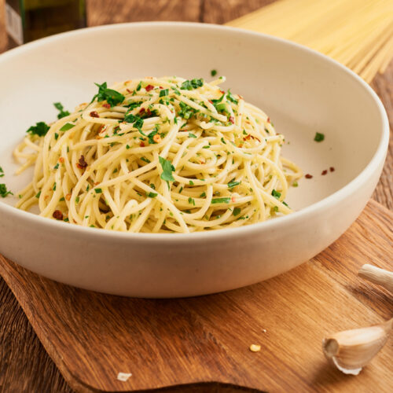

Pasta Olio
Description
Your basic Italian pasta made with very few ingredients. Delicious, filling and easy to make.
Ingredients
- 1 box of Spaghetti
- ¾ cup - Olive Oil
- ½-1 tsp - Crushed Red Pepper Flakes
- ½-1 tbsp - Salt (for pasta water)
- 1 tsp Salt (for mixture)
- 4-8 - Garlic Cloves, minced
- ¼ cup - Pasta Cooking Water
- 1 bushel - Italian Parsley, roughly chopped
- Add zest and juice of 1 full lemon (or 2 tbsp lemon juice) to add some lemony goodness.
Optional:
Directions
- Start pasta. Add around ½-1 tbsp Salt to water for flavor. Cook to al dente.
- Heat the oil in a large saucepan over medium heat.
- Add the garlic and cook, stirring continuously until fragrant, making sure it doesn't brown.
- Remove from heat temporarily, add the salt & red pepper flakes and stir to infuse with the oil.
- Add the pasta water, parsley (and optional lemon). Bring to a boil.
- Toss with cooked pasta.